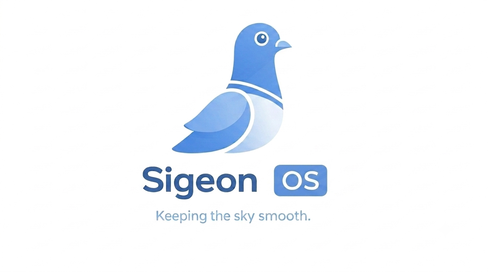

Sigeon OS
Simple. Fast. Arch.
A fast, friendly Arch-based Linux distribution with everything you need to get started — and nothing you don't.
Download nowWhy Sigeon OS?
Lightweight XFCE desktop
A clean, familiar desktop that stays snappy even on modest hardware, pre-configured with a single taskbar and a good default theme.
One-click driver install
The built-in Drivers app detects your NVIDIA, AMD or Intel GPU and installs the correct drivers — including proprietary ones from AUR.
Easy installer
Calamares takes you from live ISO to a fully installed system in minutes, with a persistent pacman keyring and working network out of the box.
Easy user experience
Everything is set up for you out of the box — a polished desktop, sensible defaults and an installer that just works, so you can focus on using your system, not configuring it.
Rolling releases
Based on Arch Linux — always current software, and every package you know from the Arch repositories.
Open source
Everything is built in the open on GitHub under the GPL-3.0 license. Build it, tweak it, fork it.
Take a look

Download Sigeon OS
SHA-256:63675d5f2d590de988aa6a273b1e3f1f7954936ae59bbba316bcdbdc74e5481c
After downloading, verify the checksum above matches your file.
Flash it to a USB stick
Write the ISO to a USB drive (at least 4 GB) with dd. Make sure /dev/sdX is the right disk — it will be wiped!
dd bs=4M status=progress of=/dev/sdX if=sigeonos-1.0-x86_64.iso conv=fsyncBoot the stick, and the Calamares installer will walk you through the installation.